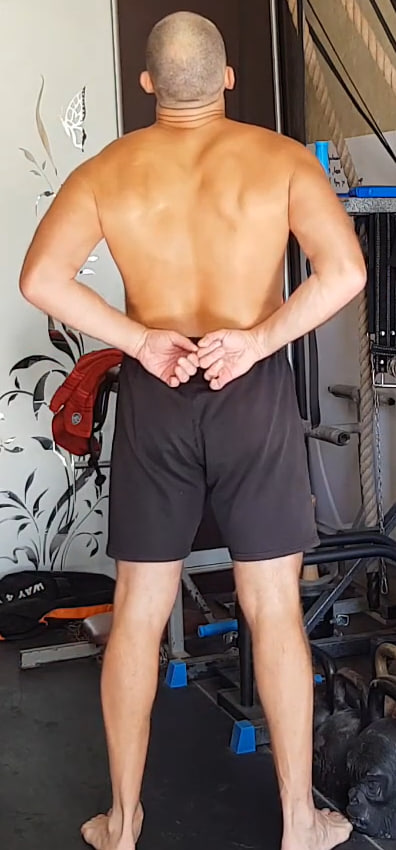
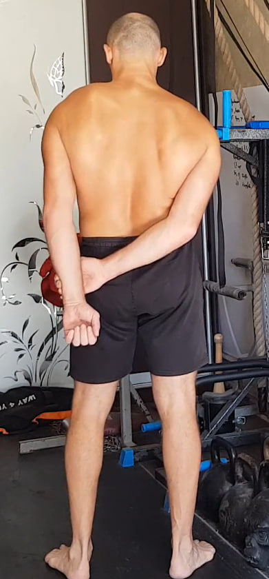
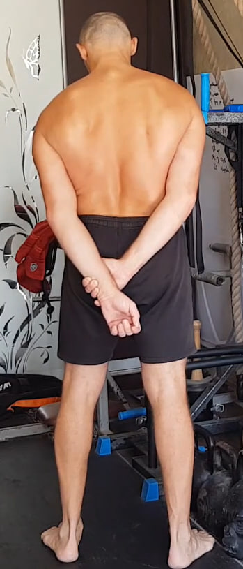
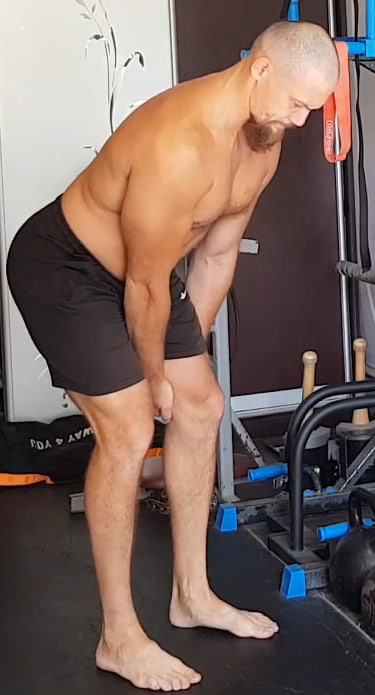
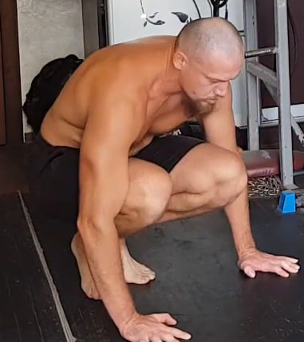
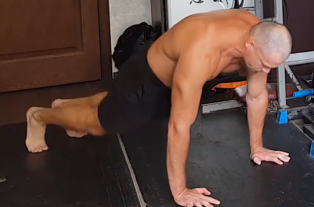
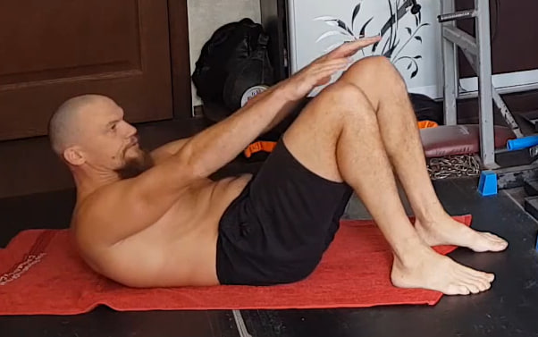
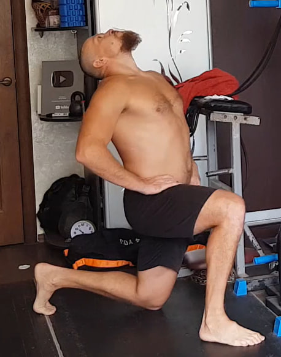
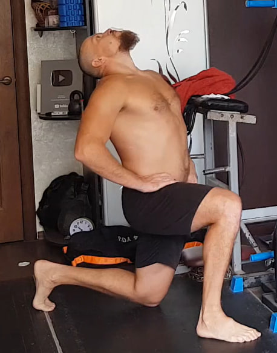

Nota importante antes de comenzar
Esta sesión debe realizarse en ayunas o con el estómago casi vacío. En realidad, cualquier entrenamiento funciona mejor así, pero en el Día 6 es especialmente importante por los últimos ejercicios, que implican una activación profunda del diafragma y un masaje intenso de los órganos internos.
Deja pasar al menos 3–4 horas después de la última comida antes de empezar la rutina.
1. Colgamientos parciales con apoyo en las puntas de los pies

Cuelga de una barra o cualquier soporte sólido que no pueda romperse. No cuelgues todo tu peso: deja una parte del peso sobre las puntas de los pies para mantener un estiramiento seguro y controlado. Relaja los hombros y permite que la columna se alargue de forma natural; si es posible, inclina ligeramente la pelvis hacia adelante para mejorar la descompresión de la espalda. Mantén la posición durante 10 segundos y repite 10 veces.
2. Isometría “aplastar el coco” para deltoides posterior
Entrelaza las manos detrás de la espalda, justo por encima de la cintura. Desde ahí intenta “aplastar un coco imaginario” entre los omóplatos: lleva ligeramente los codos hacia afuera y genera una contracción fuerte en la parte alta de la espalda, enfocándote en el deltoides posterior y la zona interescapular. La espalda no debe arquearse hacia atrás; el trabajo es interno, solo tensión muscular. Mantén la contracción 10 segundos y repite 10 veces.
3. Isometría del dorsal ancho (parte externa)
Con una mano agarra la muñeca o el antebrazo del brazo contrario, que debe permanecer totalmente recto. Intenta “jalar” ese brazo hacia tu cuerpo, mientras la espalda —sobre todo la parte externa del dorsal y la escápula— no permite que el brazo se desplace hacia adentro. La sensación correcta es como si la axila y el lateral de la espalda se cerraran y comprimieran con máxima fuerza. Cambia ligeramente los ángulos hasta encontrar una tensión nítida y profunda. Mantén la contracción 10 segundos y repite 10 veces por lado.
4. Isometría del dorsal ancho (zona externa inferior)
Coloca las manos entrelazadas detrás de la espalda unos 10–15 cm más abajo que en el ejercicio anterior. La mano de apoyo sujeta firme y el brazo de trabajo mantiene una ligera tensión hacia afuera. Intenta acercar el brazo al cuerpo mientras la parte externa e inferior del dorsal resiste y no deja que el brazo se acerque. La tensión debe sentirse más baja, cerca del lateral de la zona lumbar. Ajusta pequeños ángulos hasta que la contracción se concentre claramente en ese sector. Mantén 10 segundos y repite 10 veces por lado.
5. Elevaciones de espalda y piernas (“barco dinámico”)

Acuéstate boca abajo con las piernas estiradas y las manos detrás de la cabeza. Desde esta posición eleva simultáneamente el pecho, los codos y las piernas del suelo, creando una contracción fuerte en toda la espalda, glúteos y zona lumbar. No busques velocidad: el movimiento debe ser controlado, con una subida limpia y una bajada suave. Mantén la mirada hacia el suelo para no forzar el cuello. Realiza 10 repeticiones.
6. Peso muerto isométrico “bloqueado”
Colócate de pie con los pies al ancho de los hombros e inclina el torso hacia adelante manteniendo la espalda firme y recta. Sujeta con las manos las rodillas o la parte superior de las piernas, creando un punto de anclaje que bloquea el movimiento. Desde ahí intenta levantar el torso como en un peso muerto real, pero las manos no permiten que el cuerpo suba, generando una tensión muy fuerte en la espalda baja, glúteos y cadena posterior. Mantén la contracción 10 segundos y repite 10 veces.
7. Rotura en tres puntos con toalla


Utiliza una toalla, cinturón de kimono, cadena o cualquier cinta que no se estire. Enrolla el material en las muñecas dejando unos 46 cm de distancia entre las manos. Trabaja en tres posiciones: delante del cuerpo, sobre la cabeza y detrás de la espalda. En cada punto tarda 3 segundos en entrar en la tensión, mantén 6 segundos de fuerza máxima como si realmente quisieras romper la toalla y usa 3 segundos para soltar. Completa 10 ciclos.
8. Saltos en posición de plancha
 Comienza en posición de plancha con los brazos extendidos. Desde ahí, salta llevando los pies hacia adelante debajo del pecho y vuelve atrás a la plancha con otro salto. Mantén el abdomen firme y evita que la cadera se hunda. Realiza 10 repeticiones seguidas con un ritmo elástico y continuo.
9. Elevación parcial del abdomen
Acuéstate boca arriba con las rodillas flexionadas y los pies apoyados en el suelo. Eleva el torso solo lo necesario para activar bien el abdomen, sin incorporarte por completo. El movimiento es corto: sube y baja sin llegar a relajar la zona abdominal, manteniendo la tensión constante. Exhala al subir e inhala al bajar. Realiza 10 repeticiones lentas y controladas.
10. Respiración diafragmática de fuerza con expulsión de objeto
 

Ponte de pie o de rodillas con las manos en la cintura para sentir la tensión del abdomen. Inhala profundo y luego expulsa el aire con fuerza, activando al máximo el diafragma, los músculos intercostales y toda la zona abdominal. Usa un trozo de papel o tela ligera y lánzalo hacia arriba con la exhalación, intentando elevarlo lo más alto posible.
El objetivo no es solo un soplido fuerte, sino también mantener el objeto flotando en el aire el mayor tiempo posible, controlando la salida del aire sin perder la tensión en el abdomen. Evita la hiperventilación: si aparecen puntos negros delante de los ojos, zumbido en los oídos o sensación de mareo, detén el ejercicio de inmediato. Realiza 10 intentos con respiración segura y controlada.
11. Uddiyana Bandha con bombeo abdominal


Colócate de pie e inclínate ligeramente hacia adelante apoyando las manos en las rodillas. Exhala por completo hasta vaciar los pulmones y realiza una retención con los pulmones vacíos. En esta apnea, primero aspira el abdomen hacia dentro y hacia arriba, elevando las costillas y creando un vacío abdominal, y luego relaja el abdomen dejándolo caer hacia afuera.
Repite este ciclo de meter y soltar el abdomen tantas veces como puedas mientras mantienes la retención. Cuando ya no puedas sostenerla más, inhala suave y descansa. En cada sesión intenta hacer una repetición más del ciclo de bombeo. Este ejercicio produce un fuerte masaje de los órganos internos, activa el diafragma y fortalece profundamente la musculatura abdominal, por eso se realiza estrictamente en ayunas.